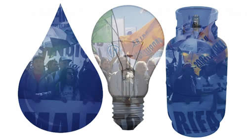

Real Chubut - Agencia de Noticias


Maldito tarifazo

Mientras se anuncian más subas de tarifas, como la del gas, donde las empresas ya piden por encima de lo anunciado, se multiplican las protestas en la calle, de los movimientos sociales y sindicales, y los reclamos legales de intendentes, organizaciones de vecinos y opositores.
Mientras en el Centro Metropolitano de Diseño las distribuidoras de gas pedían, en una audiencia pública oficial, nuevas subas "para garantizar la sustentabilidad del servicio", dos protestas multisectoriales salieron a interpelar la lógica de los aumentos sin límite. El rechazo a los tarifazos sacó a la calle a movimientos sociales, que con un arco de sindicatos llevaron al Congreso un proyecto contra los aumentos. Al mismo tiempo, intendentes del Conurbano y multisectoriales de vecinos hicieron una suerte de contra audiencia (convocada como Gran Audiencia Pública Nacional)en el teatro Astros donde, durante siete horas, vecinos y especialistas expusieron casos y propuestas. El objetivo es generar consenso y fuerza política para una nueva Ley de Servicios Públicos. Y bastante más.
"Hay cosas que sólo podemos hacer en años impares", definió a PáginaI12 uno de los intendentes. Para los dirigentes del peronismo bonaerense, organizar la Gran Audiencia Pública fue una forma de dar otro paso en la construcción de la buscada unidad, de cara a octubre.
En el teatro estuvieron Gabriel Katopodis (intendente de San Martín), Verónica Magario (La Matanza) y Fernando Gray (Esteban Echeverría). También los precandidatos presidenciales Agustín Rossi y Felipe Solá, los diputados Hugo Yasky y Leonardo Grosso y el Defensor del Pueblo bonaerense, Guido Lorenzino. Entre los referentes sindicales se vio al titular del Suteba, Roberto Baradel, y Walter Correa, de Curtidores. Y referentes de la oposición de peso distrital, como Federico Martelli (La Plata) y Santiago Cafiero (San Isidro).
Como tema más novedoso, la actividad llevó a que compartieran el escenario vecinos de las multisectoriales (e integrantes de organizaciones con un perfil más ong), con referentes partidarios. Desde las 11 hasta las 18 en el teatro —a razón de tres minutos por orador- hicieron uso de la palabra concejales, familiares de electrodependientes, militantes de perfil progresista, curas, pastores evangélicos, trabajadores del ENRE, asociaciones del consumidor.
Contó Valeria González, de la localidad de San Pedro: "Tuvimos la necesidad de plantarnos en la puerta de la empresa eléctrica y en la del municipio a expresar nuestro descontento. El acceso a la luz, el agua y el gas tienen que ser reconocidos como parte de los derechos más básicos, un derecho de ciudadanía. No hay dimensión pública del problema que estamos viviendo, que hoy lleva a que haya gente que tiene que compartir la heladera porque al vecino le cortaron la luz, y que se esté volviendo a cocinar con garrafa".
Lorena Riesgo, concejal de La Plata, habló sobre "el enriquecimiento de las distribuidoras". Aseguró que sólo en 2017, en su ciudad, la empresa de electricidad "Edelap recaudó 2.700 millones, cuatro veces más que su plan de inversión a cinco años".
Luciano Fernández, de ATE Capital, apuntó que "se quitaron subsidios y se dolarizaron las tarifas", con el resultado de que "la incidencia del gasto en servicios en nuestros salarios pasó del 6 al 21 por ciento".
Santiago Deschutter, de la Multisectorial de Luján, señaló que "hay que avanzar en una condonación de deudas". Como muchos otros, su planteo fue que la energía es un derecho y no puede estar bajo el control de las empresas.
La idea de fondo que se trabajó a lo largo de la Audiencia es que los recursos energéticos y los servicios públicos pertenecen al Estado, aún cuando lo gestione un privado. En este marco, el Estado debe garantizar que las tarifas sean justas, equitativas y razonables.
Los intendentes vienen de presentar en diciembre un pedido de amparo en un juzgado federal de La Plata contra los aumentos de tarifas, que todavía no tuvo resolución. Uno de sus argumentos fue tomado de un fallo de la Corte Suprema y dice que las tarifas deben ser "proporcionales y accesibles".
"Ninguno de los aumentos de estos tres años consideró esa situación. Ningún ingreso salarial ni ninguna rentabilidad de una PyME o un comercio creció lo que crecieron las tarifas. Otro tema es dónde fue esa plata, porque no vemos que las empresas hayan hecho inversiones ni que haya mejorado la calidad de los servicios. Hay complicidad de las empresas que han utilizado la plata para ponerla en la bicicleta financiera, y del gobierno que mira para el otro lado", advirtió Gabriel Katopodis, el jefe comunal de San Martín.
Desde la Red de Multisectoriales, Andrea Manzi adelantó que la intención es llevar este esquema de participación a tantos lugares como puedan. "Tenemos que comprometer a los legisladores, que se den cuenta que es una realidad que golpea. Queremos que en cada pueblo los referentes barriales, los partidos vecinales, los clubes de barrio puedan juntarse y debatir qué pasa en sus lugares con las tarifas. Debemos instalar el concepto de derecho humano vinculado a los servicios de luz, agua y electricidad. Una cosa decirlo y otra trabajarlo: ahora nos toca eso. Estamos en un año electoral y es importante hacer el esfuerzo, porque no creo que todos hayan dimensionado lo que provoca el tarifazo".
Las primeras multisectoriales se crearon hace tres años, con los tarifazos del 2016. Aunque en ellas es clara la participación de militantes que entraron a la política con el kirchnerismo, son organizaciones que se piensan como una forma de construcción que trasciende lo partidario. "Ese es el desafío de la unidad: trascender el sello", resumió Manzi.
En el ENRE
El corte frente al ENRE —el organismo regulador del servicio eléctrico- y la movilización al Congreso tuvieron por actores a la CTA Autónoma, junto a gremios de la CGT y los movimientos populares del llamado triunvirato, la Corriente Clasista y Combativa, la CTEP y Barrios de Pie: también en esta marcha de unidad se expresó el año impar.
Detrás de la una bandera con la consigna Maldito Tarifazo estuvieron Hugo Godoy (ATE Nacional) y Juan Carlos Schmid (de la Confederación Argentina de Trabajadores del Transporte), que hablaron frente al ENRE. Después la movilización fue al Congreso. Ahí fue presentado un proyecto de resolución a diputados de la oposición por que se congelen las tarifas. Héctor "Gringo" Castro, de CTEP, Fredy Mariño de la CCC y Norma Morales, de Barrios de Pie, estuvieron a cargo del acto de cierre de la jornada.
El proyecto propone la suspensión inmediata de los tarifazos en los servicios públicos de luz, gas, agua y transporte., revirtiendo los anuncios ya realizados para retrotraer la situación a comienzos de 2018. Y llama "a una amplia convocatoria para discutir nuevas bases de funcionamiento del sistema energético nacional, que hoy se ha transformado en una caja de ganancias irracionales de un conjunto de empresas oligopólicas asociadas a un Estado cómplice y socio de tal despojo".
El punto central de esa discusión se enlaza con los expresados en la Audiencia del teatro Astros: considerar la energía como bien estratégico y como derecho humano. El texto presentado remarca que la energía "es, simultáneamente, un bien económico crítico como un bien social, del común, del pueblo. Por ende, configura un bien de interés público".
Propone, finalmente, recuperar de un criterio de planificación integrado y centralizado del sistema energético. "Debemos desandar el camino nefasto de la desregulación. Ese esquema ha destruido infraestructura, no ha hecho inversiones y pone en peligro el acceso de la población en el altar de las rentas de un conjunto de empresas fragmentadas que desde hace tres décadas usufructúan de los bienes que el Estado nacional, en más de 70 años, ha construido con los recursos de todos los argentinos".
Fuente: Pagina 12